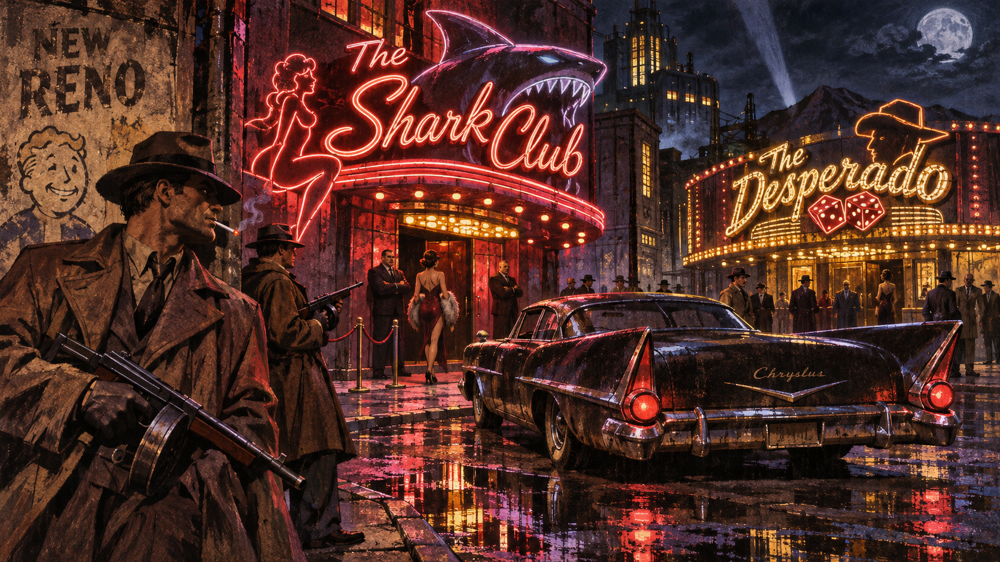
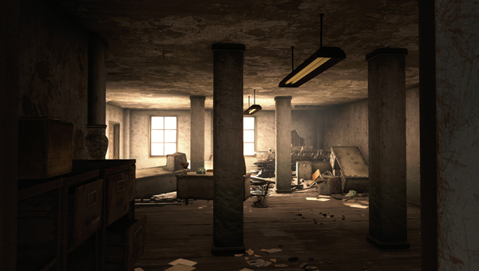

В такой Fallout вы ещё не играли.
Глобальная переработка классической Пустоши, объединяющая 28 модификаций и каноничных модулей в единую стабильную систему. Здесь возвращены вырезанные локации (Аббатство, EPA, Деревня Дикарей, Убежище 23) и незаконченные квесты, добавлены 3D-головы ключевых лидеров Пустоши, новая спутница Ангелина Бишоп из Нью-Рено, напарники визуально меняют экипировку при смене брони, а саундтрек звучит в несжатом стерео 44.1 кГц.
И многое, многое другое.

Бережно сохранённый Fallout на фундаменте Restoration Project.
Здесь устранены баги оригинала, но оставлен нетронутым каноничный баланс оригинальной игры без усложнения лишними механиками. Главный акцент сделан на графике и технологиях: открытый C++ движок SDL2, нативная поддержка высоких разрешений 2K и 4K, динамическое лучевое освещение Dustlight, субпиксельная плавность движения камеры и высокая герцовка без микрофризов.
И многое, многое другое.